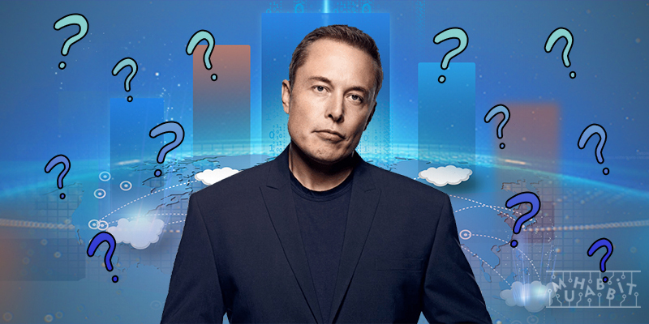
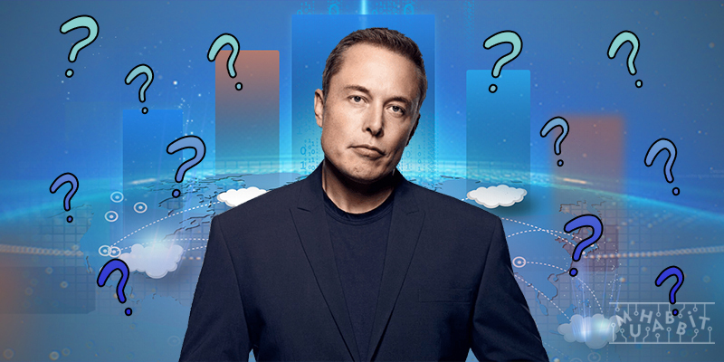

Elon Musk Kimdir?
Elon, kendi kendine yazılım programlayıp kodlamayı öğrendi. 12 yaşındayken kendi yazdığı Blastar adındaki uzay oyununu yaklaşık 500 dolara satıp ilk parasını kazandı. Bryanston Lisesi'nde sekizinci ve dokuzuncu sınıfları okuyup oradan Pretoria Boys Lisesi’ne geçti ve mezun oldu. 1988 yılında henüz 17 yaşındayken Güney Afrika ordusunda askerlik yapmamak için evinden ayrıldı. 1992 yılında, Kingston, Ontario’daki Queen's University’de iki yıl geçirdikten sonra, University of Pennsylvania’da işletme ve fizik okumak için Kanada’dan ayrıldı.

The Wharton School of the University of Pennsylvania’da ana dal olarak ekonomi seçti ve lisans diplomasını aldı. Ayrıca yan dal olarak da fizik okudu ve onun da diplomasını aldı. Daha sonra Uygulamalı Fizik ve Malzeme Bilimi alanında doktora yapmak için Kaliforniya’nın Silikon Vadisi bölgesine taşındı. Ancak doktorayı tamamlamadı ve okuldan ayrıldı. Musk bu sırada “insanlığın geleceğini en çok etkileyecek sorunlardan oluşan” üç alan tespit etti. Bu alanlar 'internet', 'temiz enerji' ve 'uzay' oldu.
SpaceX Haziran 2002’de kuruldu. SpaceX günümüzde dünyanın en ileri teknoloji roketlerini üretiyor ve uzay yarışında rakipsiz hale geldi. Musk dikine yer yüzüne geri inebilen ilk roketleri geliştirmeyi başardı ve bu sayede uzaya malzeme ve insan gönderme maliyetlerini dramatik şekilde düşürdü. SpaceX sayesinde kendi uydu internet hizmetini de başlatan Musk, binlerce uyduyu yörüngeye yerleştirmeye devam ediyor. Starlink adlı bu internet şirketinin sağladığı hizmet hali hazırda bugün dünyanın her yerinde kullanılabiliyor. Şirketin ilk iki fırlatma araçları Falcon 1 ve Falcon 9'un ardından üretilen Falcon Heavy de tarihte fırlatılmış en güçlü roketlerden biri oldu. Sıradaki 'Starship' modeli ise insanoğlu tarafından yapılmış en büyük ve en güçlü uzay roketi olacak ve önce Ay'a sonra da Mars'a giderek orada koloniler kurulmasını sağlayacak. Şirketin ayrıca ilk uzay aracı da Dragon adında bir kapsül ve Musk bu sayede uzay istasyonuna bir seferde 4 astronot gönderebiliyor.
 

Dünyanın en zengin kişisi olan mühendis, mucit, yatırımcı ve girişimci Elon Musk son olarak dünyanın en büyük ve en önemli sosyal medya platformlarından biri olan Twitter'ı 44 milyar dolara satın aldı. Musk, 28 Haziran 1971 tarihinde Güney Afrika'da doğdu. Kanadalı bir annesi ve Güney Afrikalı bir babası var.
Uzun bir süre boyunca ne Tesla ne de Solar City kar etti ve Musk'ın finansal durumu hep kırılgan oldu. Evini ve tüm mal varlıklarını satan Musk, borç alarak yaşadı. Arkadaşlarının evlerinde uyudu. Bugün bile Musk'ın sahibi olduğu bir evi veya kişisel arsası yok.